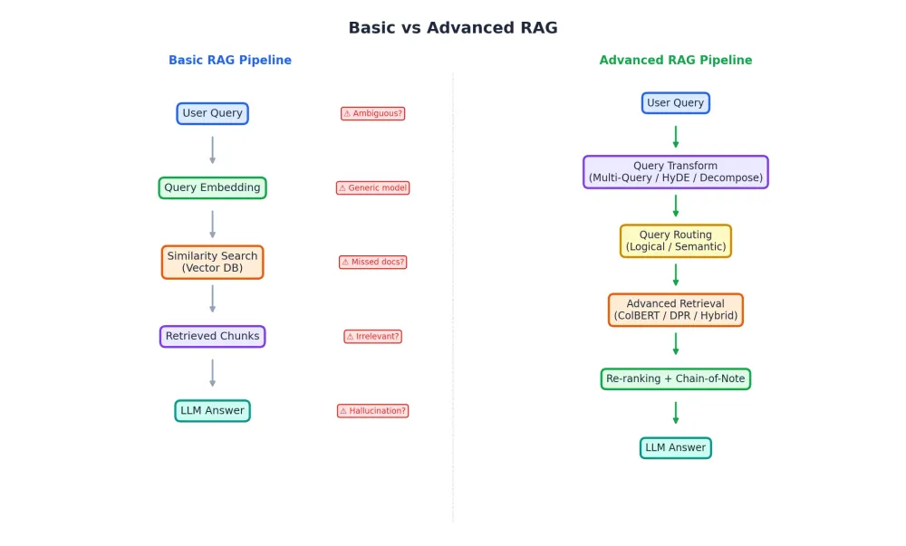
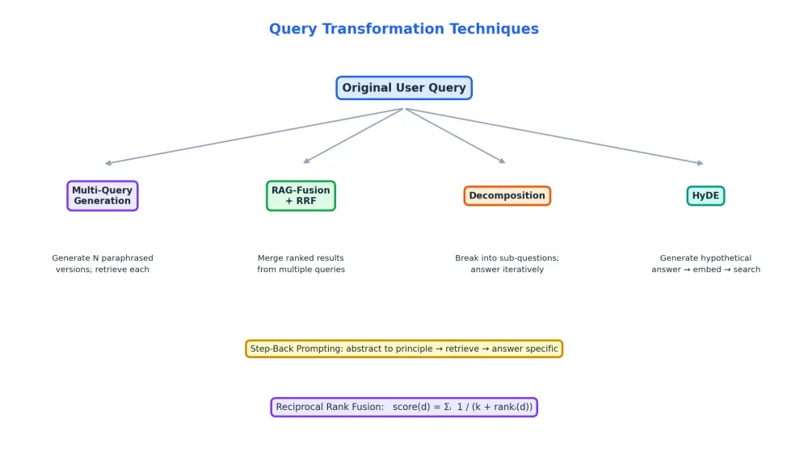
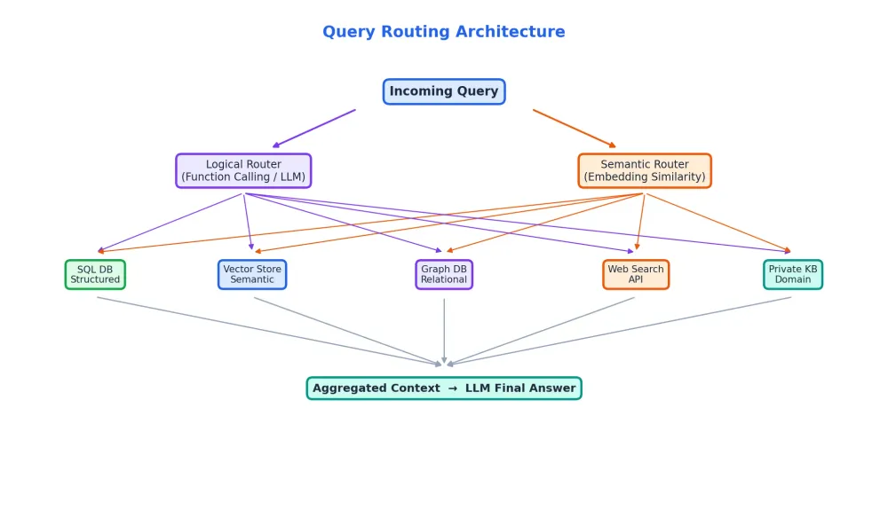
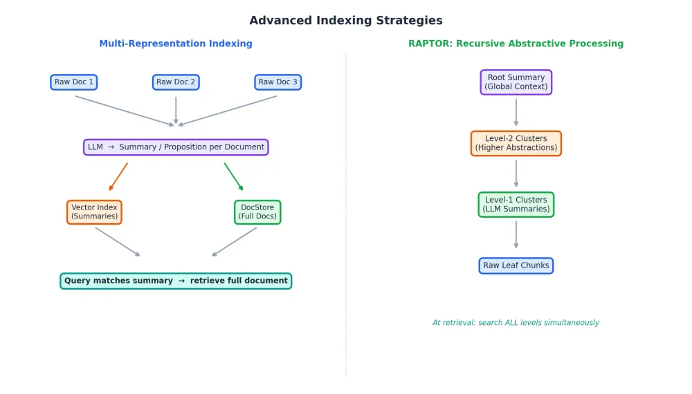
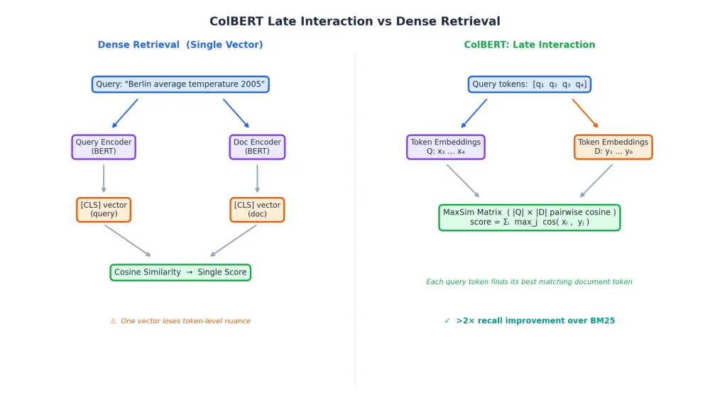
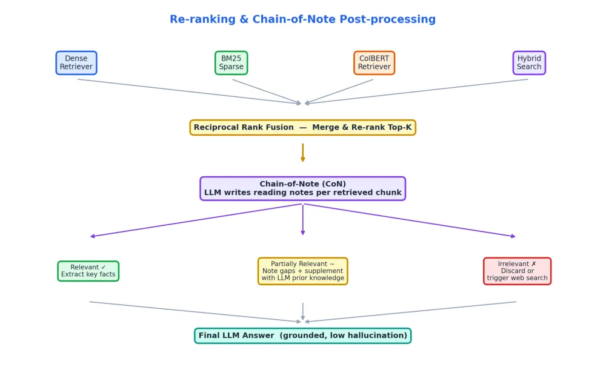
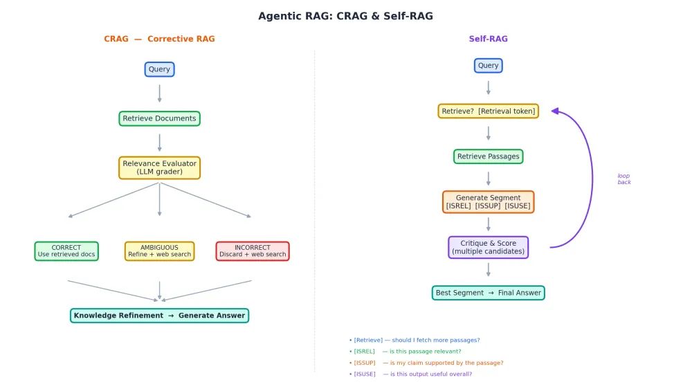
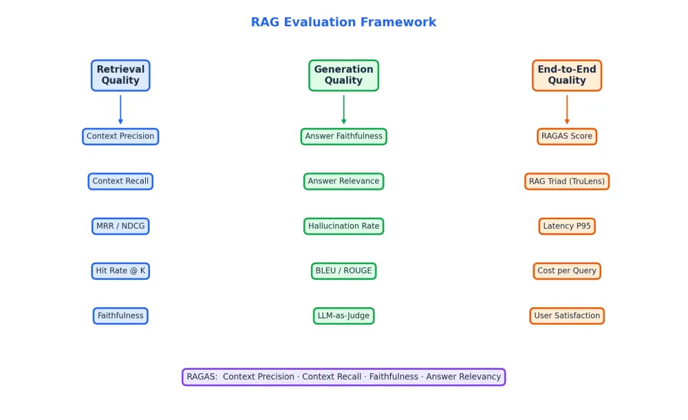

Comprehensive notes — building retrieval-augmented generation that holds up in production.
Most RAG systems work fine in demos and fall apart in production, for a predictable reason: basic RAG has five distinct points of failure, and most teams only discover them after shipping. These notes walk through every stage where things break and how to fix each one systematically — query transformation, intelligent routing, ColBERT-style retrieval, Chain-of-Note post-processing, and agentic correction loops.
Part of the AI-PLATFORM reference. Technique explanations follow the source blog (see reference/SOURCES.md); each section adds worked Observability and Security use-case examples (included at explicit request). Diagrams in images/. Export to PDF: open in a browser → Print → Save as PDF.

The basic pipeline has 5 failure points:
User Query → Query Embedding → Similarity Search → Retrieved Chunks → LLM Answer
| Stage | What goes wrong | Why it matters |
|---|---|---|
| User Query | Ambiguous, poorly worded | Garbage in, garbage out |
| Query Embedding | Generic model misrepresents intent | Wrong retrieval space entirely |
| Similarity Search | Semantically close ≠ answer-bearing | Top-K chunks miss the point |
| Retrieved Chunks | Irrelevant or missing context | LLM gets confused or hallucinates |
| LLM Answer | Ignores context, uses prior knowledge | Wrong answer delivered confidently |
People build basic RAG and it works fine on demos. Then it hits production, user queries get weird, and retrieval starts returning chunks that are vaguely related but useless. The system looks smart but isn't.
The problem: users don't write good queries — they write what they're thinking, not what the vector database needs to hear. A single poorly-phrased query retrieves the wrong documents even if the answer is sitting right there in your corpus.

Generate N paraphrased versions of the original query, retrieve separately for each, merge all results before ranking.
from langchain.retrievers.multi_query import MultiQueryRetriever
retriever = MultiQueryRetriever.from_llm(
retriever=vectorstore.as_retriever(),
llm=llm
)
docs = retriever.get_relevant_documents("What is the revenue of Company X in 2005?")Typically 10–15% recall improvement on ambiguous queries. Cost is extra LLM calls — worth it for any query where precision matters.
Generate multiple related queries, retrieve for each, then merge the ranked lists with RRF. Key insight: a document appearing consistently across multiple ranked lists is probably genuinely relevant.
def reciprocal_rank_fusion(results: list[list], k: int = 60) -> list:
scores: dict = {}
for ranked_list in results:
for rank, doc in enumerate(ranked_list):
doc_id = doc.page_content
scores[doc_id] = scores.get(doc_id, 0) + 1 / (k + rank + 1)
return sorted(scores.items(), key=lambda x: x[1], reverse=True)score(d) = Σᵢ 1 / (k + rankᵢ(d))
Expect 15–20% improvement on queries with multiple valid angles. k=60 is from the original paper and works well in practice.
Break a complex question into sequential sub-questions. Answer each, then feed those answers as context for the next.
# Use case: "Is Berlin warmer today than in 2005?"
# Sub-Q1: What is Berlin's current average temperature?
# Sub-Q2: What was Berlin's average temperature in 2005?
# Synthesis: Compare the two answersThe most underused technique. Analytical questions are almost never stated verbatim in your documents — a direct vector search returns general chunks, not the specific comparison. Decomposition forces retrieval of the atomic facts and reasoning over them.
Generate a hypothetical answer, embed that, then search for real documents similar to it. You're asking: what would a document that answers this look like?
from langchain.chains import HypotheticalDocumentEmbedder
hyde_embeddings = HypotheticalDocumentEmbedder.from_llm(
llm=llm,
base_embeddings=embeddings,
custom_prompt=hyde_prompt
)Powerful for domain-specific corpora where query language differs from document language. Tradeoff: hallucinated hypotheses can steer retrieval wrong — ground your prompts tightly.
Before searching, abstract the query to a higher-level principle. Retrieve for that abstraction, then answer the specific question with that broader context.
Original: "What happens to a gas when pressure increases at constant temperature?"
Step-Back: "What is Boyle's Law?"
Retrieve Boyle's Law docs → use them to answer the original questionWorks well in scientific, legal, and technical domains where specific questions are really asking about general principles.
The problem: real systems have a SQL database, a vector store, maybe a graph database, APIs, and a private KB. Sending every query to every source is expensive and noisy; sending it to the wrong source gives you nothing useful.

Give the LLM a structured schema and let it decide which store to query. Works well when data sources have clear, non-overlapping domains.
from pydantic import BaseModel
class RouteQuery(BaseModel):
datasource: Literal["python_docs", "js_docs", "golang_docs"]
structured_llm = llm.with_structured_output(RouteQuery)
def route(question: str) -> str:
return structured_llm.invoke(question).datasourceEmbed descriptions of each data source and route by embedding similarity — no LLM call, just a cosine check.
from langchain.utils.math import cosine_similarity
route_layer = {
"sql_db": embed("Structured data, financial records, transactions"),
"vector_store": embed("Semantic search over unstructured text"),
}
def semantic_route(query: str) -> str:
q_embed = embed(query)
scores = {k: cosine_similarity(q_embed, v) for k, v in route_layer.items()}
return max(scores, key=scores.get)Data sources don't have to be static — route to live APIs where the LLM generates the parameters, the tool executes, and the output feeds back into the RAG context. This is where RAG starts blending into agentic systems (§7).
# LLM decides: "This needs real-time data"
# → calls weather_api(city="Berlin", date="today")
# → response becomes part of retrieved contextThe problem: standard chunking is brutal. Split a 50-page doc into 512-token chunks, embed, and hope the right chunk surfaces. Flat indices don't understand document hierarchy, and the chunk that retrieves well often isn't the chunk that answers the question completely.

Index small, return large. Use LLM-generated summaries or propositions for the vector index (they embed cleanly), but store the full documents separately. Retrieval hits the summary; generation gets the full document.
from langchain.storage import InMemoryByteStore
from langchain.retrievers.multi_vector import MultiVectorRetriever
summaries = [llm.invoke(f"Summarize: {doc}") for doc in docs]
store = InMemoryByteStore()
retriever = MultiVectorRetriever(
vectorstore=vectorstore, # searches summaries
byte_store=store, # returns full docs
id_key="doc_id",
)
retriever.docstore.mset(list(zip(doc_ids, docs)))Solves a real problem: dense embeddings of long documents lose specificity because they average over too much content.
Build a tree. Leaves are raw chunks; each level above clusters the nodes and has an LLM summarize each cluster, up to a single root node capturing the whole document's essence.
Level 0: Raw chunks (leaves)
Level 1: LLM summaries of chunk clusters
Level 2: Summaries of level-1 summaries
Root: Global document summaryAt query time, search all levels simultaneously — simple queries hit leaves, high-level conceptual queries hit the root, multi-hop questions find intermediate nodes. Cluster with Gaussian Mixture Models, summarize with an LLM. The paper reports 20%+ gains on multi-hop questions (arxiv 2401.18059).
If your vector store has metadata, use it — convert natural-language conditions into structured filters before searching.
# "What Python tutorials were published after 2023?"
metadata_filter = {"language": "python", "publish_date": {"$gt": "2023-01-01"}}
retriever = vectorstore.as_retriever(search_kwargs={"filter": metadata_filter})A massive win on corpora with rich metadata. Construct the filter first, then search a smaller, cleaner subset.
service and time-window metadata so an incident query searches only the relevant, recent slice.sensitivity/owner metadata to constrain retrieval to authorized subsets before searching — filtering, not post-filtering.The problem: general-purpose embedding models capture semantic similarity, not answer-bearing relevance. A passage about "temperature measurement instruments" is similar to "thermometer history" but may be useless for answering it. One vector collapses everything and loses nuance.

Train separate encoders for queries and documents on actual Q&A pairs. The training objective is the key difference: contrastive loss on real question-answer pairs teaches the model what "answers this question" looks like, not just what's similar.
query encoder: Q → q_vec
document encoder: D → d_vec
score = dot(q_vec, d_vec)In-batch negatives during training force the model to distinguish answer-bearing passages from merely related ones.
Standard retrieval compresses a document into one vector. ColBERT keeps one vector per token and compares at the token level.
Query tokens: [q1, q2, q3, q4] → embeddings [x1, x2, x3, x4]
Document tokens: [d1..d8] → embeddings [y1..y8]
MaxSim score = Σᵢ max_j cosine(xᵢ, yⱼ)For each query token, find the most similar document token and take that score; sum across query tokens. A query like "Gross Revenue of all products of Company X in 2005" gets scored on each key term independently rather than as a blended average.
from ragatouille import RAGPretrainedModel
RAG = RAGPretrainedModel.from_pretrained("colbert-ir/colbertv2.0")
RAG.index(collection=docs, index_name="my_index")
results = RAG.search(query="Gross revenue Company X 2005", k=10)ColBERT achieves over 2× recall improvement over BM25 on NaturalQuestions. Tradeoff: storage — you store token vectors per document rather than one. For most production use cases that's fine.
ECONNRESET, OOMKilled, error codes). ColBERT's MaxSim matches those exact tokens where a single dense vector blurs them, so a precise stack-trace symbol still finds the right runbook.CVE-2026-1234 under phrasing drift; ColBERT / DPR trained on real Q&A preserves the exact-match signal while still catching paraphrased vulnerability descriptions.
Don't pick one retrieval method. Run BM25, dense, and ColBERT in parallel, then merge with RRF.
from langchain.retrievers import EnsembleRetriever
ensemble = EnsembleRetriever(
retrievers=[bm25_retriever, dense_retriever, colbert_retriever],
weights=[0.3, 0.5, 0.2]
)After the ensemble merge, add a cross-encoder re-ranker. Cross-encoders process query and document together in one pass — far more accurate than bi-encoder similarity, but too slow across the whole corpus, so run it on the top-K candidates. cross-encoder/ms-marco-MiniLM-L-6-v2 is a solid free option; Cohere Rerank is the easy production choice.
One of the most practical techniques here. Instead of dumping retrieved chunks into the context window, make the LLM read each chunk and write notes first.
CON_PROMPT = """
Given the question: {question}
Read the following passage and write concise notes:
1. Is this passage relevant to the question?
2. What specific facts from this passage help answer the question?
3. What is missing?
Passage: {passage}
Notes:
"""Three outcomes:
The hallucination reduction is real: forcing the model to explicitly evaluate each chunk before synthesizing makes it much harder to confabulate. The paper also shows it handles conflicting information across documents much better than vanilla RAG.

Add a retrieval evaluator — an LLM grader that scores each retrieved document and decides whether it warrants use. If documents are bad, CRAG refines the query or falls back to web search.
from langgraph.graph import StateGraph
def grade_documents(state):
docs = state["documents"]; question = state["question"]
scored = [grader_llm.invoke({"doc": d, "question": question}) for d in docs]
return {
"documents": [d for d, s in zip(docs, scored) if s.binary_score == "yes"],
"web_search": any(s.binary_score == "no" for s in scored)
}
def web_search(state):
if state["web_search"]:
state["documents"] += tavily_search.invoke(state["question"])
return stateDecision logic: CORRECT → proceed to generation; AMBIGUOUS → refine query + supplement with web search; INCORRECT → discard everything and do a full web search. Big deal where document staleness is a concern — your internal corpus might be six months old; CRAG falls back to fresh web content when local retrieval fails (arxiv 2401.15884).
Trains the LLM to insert special reflection tokens during generation, making it explicitly decide whether to retrieve and score its own outputs.
| Reflection token | Meaning |
|---|---|
[Retrieve] | Should I retrieve more passages? |
[ISREL] | Is this passage relevant to the query? |
[ISSUP] | Is my claim supported by the passage? |
[ISUSE] | Is this output useful overall? |
# Self-RAG generates multiple candidate segments
# Each scored by [ISREL][ISSUP][ISUSE] tokens
# Best-scored segment selected as output
# Loops back to retrieve more if ISUSE = "no"When to choose: Self-RAG for per-sentence grounding in long-form generation (finer control). CRAG for most production pipelines wanting a corrective mechanism without training a custom model (simpler, more practical).
[ISSUP] means the assistant won't claim an exposure unless retrieved evidence backs it — critical when a false claim triggers real response actions. Pair with human-in-the-loop for consequential actions.
Most teams measure end-to-end accuracy and miss where the system is actually failing. The RAG Triad isolates three independent failure modes:
| Metric | What it measures | Failure it catches |
|---|---|---|
| Context Relevance | Is retrieved context relevant to the query? | Retrieval noise |
| Groundedness | Is the answer grounded in the context? | Hallucination |
| Answer Relevance | Does the answer address the query? | Off-topic generation |
You can have perfect retrieval and still hallucinate; you can be grounded and still be off-topic. Measuring them separately tells you exactly where to focus.
from ragas import evaluate
from ragas.metrics import (faithfulness, answer_relevancy,
context_precision, context_recall)
from datasets import Dataset
result = evaluate(
Dataset.from_dict({
"question": questions, "answer": answers,
"contexts": contexts, "ground_truth": ground_truths,
}),
metrics=[faithfulness, answer_relevancy, context_precision, context_recall],
)Run this on a representative test set before and after each change. RAGAS tells you whether a retrieval optimization actually improved generation quality or just looked better in isolation.
Retrieval: Hit Rate@K · MRR · NDCG · Context Precision / Recall
Generation: Faithfulness · Answer Relevancy · Hallucination Rate
System: Latency P50/P95 · Cost-per-query · ThroughputWhen you don't have ground-truth labels, use a stronger LLM to score outputs (faithfulness 1–5, relevance 1–5, with reasoning as JSON). Not perfect, but surprisingly good for catching obvious failures and cheap to run across large test sets.
┌─────────────────────────────────────────────────────────────────────┐
│ ADVANCED RAG SYSTEM │
│ │
│ INGESTION RETRIEVAL GENERATION │
│ Raw Docs Multi-Query Re-rank (RRF) │
│ ↓ Routing Chain-of-Note │
│ Chunking ┌─────────┐ LLM Answer │
│ ↓ │ Dense │ │
│ Multi-Rep Index │ BM25 │ → Merge │
│ (Summary + Full) │ ColBERT │ Fuse │
│ ↓ └─────────┘ Re-rank │
│ RAPTOR Tree │
│ ↓ AGENTIC LAYER │
│ Vector DB CRAG evaluator │
│ + DocStore Self-RAG loop │
│ Web fallback │
│ │
│ EVALUATION: RAGAS · TruLens · LLM-as-Judge · Latency tracking │
└─────────────────────────────────────────────────────────────────────┘| Layer | Options | Recommended |
|---|---|---|
| Vector DB | Chroma, FAISS, Pinecone, Weaviate | Pinecone or Weaviate for production |
| Embedding | OpenAI, Mistral, Cohere, BGE | BGE-M3 or Mistral Embed for cost |
| Retrieval | Dense, BM25, ColBERT via RAGatouille | Ensemble for best recall |
| Re-ranker | Cross-encoder, Cohere Rerank | Cohere Rerank for simplicity |
| Orchestration | LangChain, LlamaIndex, LangGraph | LangGraph for anything agentic |
| Evaluation | RAGAS, TruLens, DeepEval | RAGAS for automation |
from langchain.retrievers.multi_query import MultiQueryRetriever
from langchain.retrievers import EnsembleRetriever, BM25Retriever
from langchain_core.runnables import RunnablePassthrough
from langchain_core.output_parsers import StrOutputParser
multi_query = MultiQueryRetriever.from_llm(retriever=dense.as_retriever(), llm=llm)
ensemble = EnsembleRetriever(retrievers=[bm25, multi_query], weights=[0.4, 0.6])
con_prompt = ChatPromptTemplate.from_template("""
Write reading notes for the context, then answer the question.
Context: {context}
Question: {question}
Notes:
Answer:
""")
chain = (
{"context": ensemble | format_docs, "question": RunnablePassthrough()}
| con_prompt | llm | StrOutputParser()
)from langgraph.graph import END, StateGraph
workflow = StateGraph(GraphState)
workflow.add_node("retrieve", retrieve)
workflow.add_node("grade_documents", grade_documents)
workflow.add_node("generate", generate)
workflow.add_node("web_search_node", web_search)
workflow.set_entry_point("retrieve")
workflow.add_edge("retrieve", "grade_documents")
workflow.add_conditional_edges(
"grade_documents", decide_to_generate,
{"web_search": "web_search_node", "generate": "generate"},
)
workflow.add_edge("web_search_node", "generate")
workflow.add_edge("generate", END)
app = workflow.compile()from ragatouille import RAGPretrainedModel
RAG = RAGPretrainedModel.from_pretrained("colbert-ir/colbertv2.0")
RAG.index(
collection=[doc.page_content for doc in docs],
document_ids=[str(i) for i in range(len(docs))],
index_name="production_index",
max_document_length=256,
split_documents=True,
)
results = RAG.search(query="What is the gross revenue of Company X in 2005?", k=10)Is the query simple and well-formed?
├── YES → Standard dense retrieval may suffice
└── NO → Apply Query Transformation first
├── Ambiguous → Multi-Query + RAG-Fusion
├── Complex multi-step → Decomposition
└── Domain mismatch → HyDE / Step-Back
Do you have multiple data sources?
└── YES → Add Query Routing (Logical + Semantic)
Is recall still poor?
└── YES → Upgrade retrieval: DPR → ColBERT → Ensemble + RRF
Are hallucinations still occurring?
└── YES → Add Chain-of-Note post-processing
Is retrieved context unreliable?
└── YES → Add CRAG evaluator + web fallback
Need per-sentence grounding?
└── YES → Self-RAG with reflection tokens
Are you measuring quality?
└── Use RAGAS + TruLens RAG Triad continuouslyAdvanced RAG isn't one technique — it's a layered set of interventions, each targeting a specific failure mode. You don't have to implement everything at once. Start with query transformation (biggest bang for least effort), then layer in better retrieval (ensemble + ColBERT), then Chain-of-Note to cut hallucinations, and only add CRAG or Self-RAG once retrieval itself is solid. Evaluate at every step with RAGAS so you actually know what's improving. The teams that build reliable RAG treat each stage as an independent engineering problem rather than hoping the LLM compensates for poor retrieval. It won't.
| Resource | Link |
|---|---|
| RAPTOR Paper | arxiv.org/pdf/2401.18059.pdf |
| CRAG Paper | arxiv.org/abs/2401.15884 |
| ColBERT Paper | arxiv.org/pdf/2004.12832.pdf |
| RAGAS | github.com/explodinggradients/ragas |
| RAGatouille (ColBERT) | github.com/bclavie/RAGatouille |
| LangGraph CRAG | langgraph CRAG example |
Source blog: "Advanced RAG patterns" (AWS Builder Center) — full text and diagrams provided by the user. Notes follow the blog's structure and content; diagrams reproduced to match the originals. Observability & Security example callouts added at explicit request. See reference/SOURCES.md.